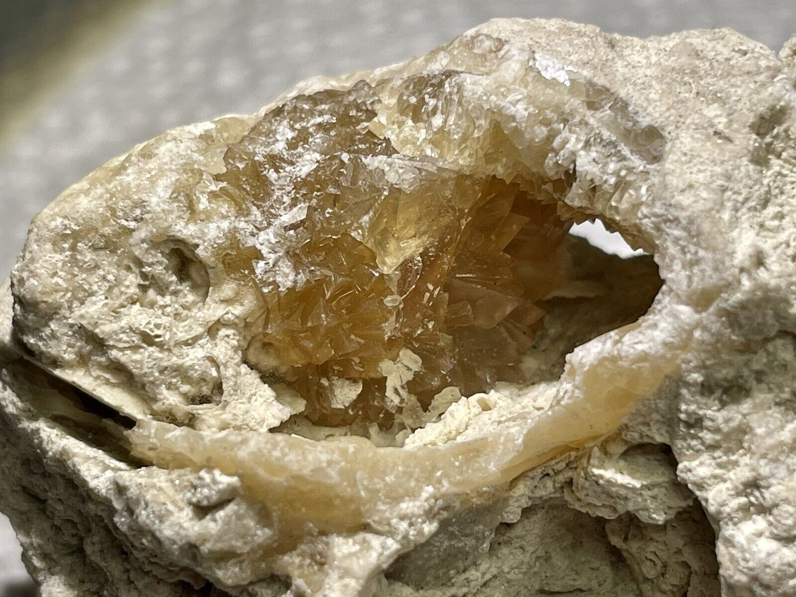
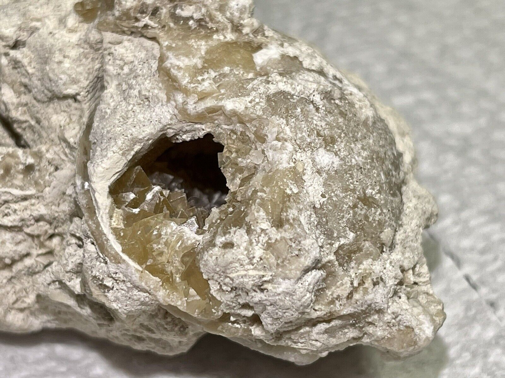
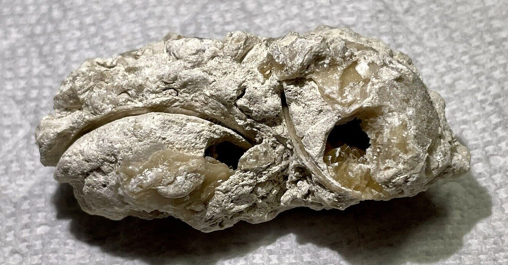
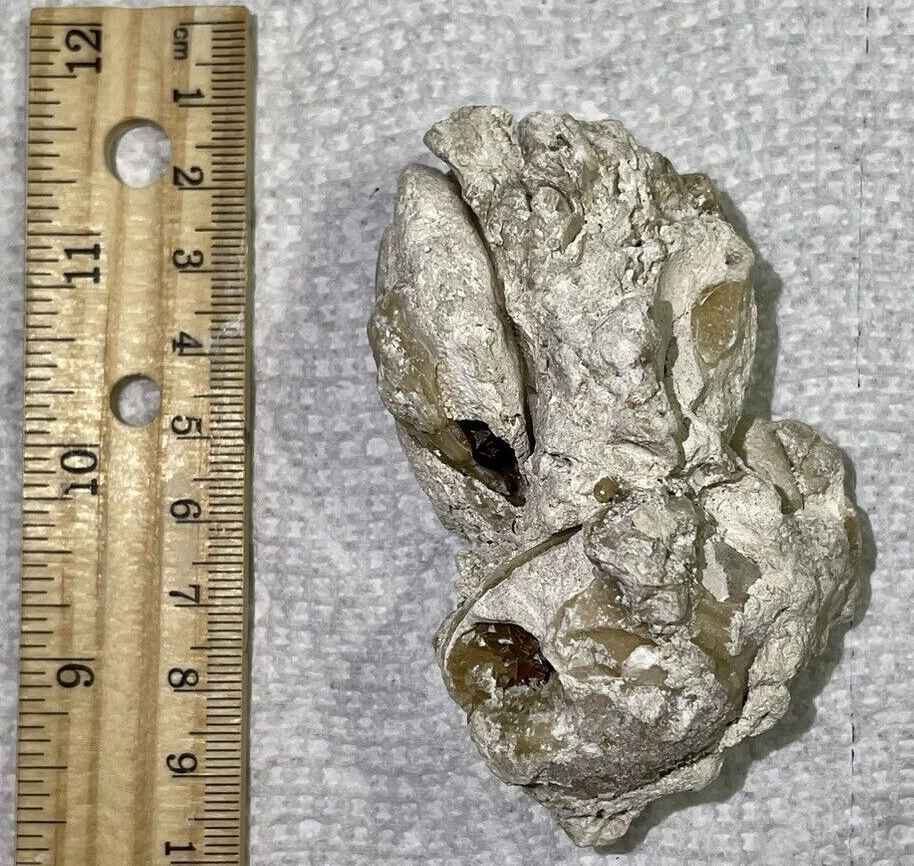

Bivalve
Indet.
Pliocene
Florida Everglades, South Florida, USA
Size:
ID: S8-Biv-Pli-nan-Ind
PRICE: $20
Here is a lovely cluster of two fossil clams, which have been replaced by calcite and and also geodized and filled with calcite crystals. According to the previous owner, this collecting locality has been developed and no longer exists.
|

|
Copyright © 2024 by Samuel Kim, all rights reserved